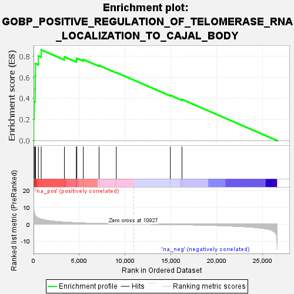
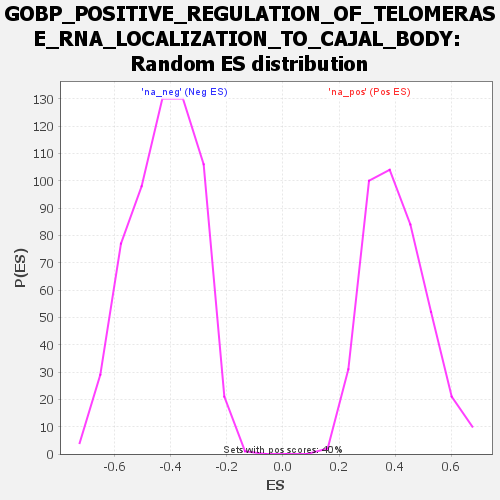

| | | Dataset | wbh_treatment_res_for_gsea |
| Phenotype | NoPhenotypeAvailable |
| Upregulated in class | na_pos |
| GeneSet | GOBP_POSITIVE_REGULATION_OF_TELOMERASE_RNA_LOCALIZATION_TO_CAJAL_BODY |
| Enrichment Score (ES) | 0.8608532 |
| Normalized Enrichment Score (NES) | 2.1388967 |
| Nominal p-value | 0.0 |
| FDR q-value | 0.0011912684 |
| FWER p-Value | 0.013 |
Table: GSEA Results Summary

Fig 1: Enrichment plot: GOBP_POSITIVE_REGULATION_OF_TELOMERASE_RNA_LOCALIZATION_TO_CAJAL_BODY
Profile of the Running ES Score & Positions of GeneSet Members on the Rank Ordered List
| SYMBOL | RANK IN GENE LIST | RANK METRIC SCORE | RUNNING ES | CORE ENRICHMENT | | 1 | CCT3 | 26 | 8.760 | 0.2086 | Yes |
| 2 | CCT6A | 70 | 6.753 | 0.3685 | Yes |
| 3 | CCT5 | 177 | 5.283 | 0.4909 | Yes |
| 4 | RUVBL1 | 188 | 5.176 | 0.6144 | Yes |
| 5 | CCT7 | 218 | 4.898 | 0.7305 | Yes |
| 6 | TCP1 | 528 | 3.516 | 0.8030 | Yes |
| 7 | CCT4 | 837 | 2.903 | 0.8609 | Yes |
| 8 | DKC1 | 3375 | 1.188 | 0.7938 | No |
| 9 | RUVBL2 | 4673 | 0.794 | 0.7640 | No |
| 10 | NHP2 | 4731 | 0.782 | 0.7806 | No |
| 11 | SHQ1 | 5438 | 0.635 | 0.7692 | No |
| 12 | CCT8 | 7156 | 0.355 | 0.7131 | No |
| 13 | NOP10 | 9038 | 0.148 | 0.6459 | No |
| 14 | CCT2 | 14941 | -0.253 | 0.4299 | No |
| 15 | NAF1 | 16208 | -0.354 | 0.3908 | No |
Table: GSEA details [plain text format]

Fig 2: GOBP_POSITIVE_REGULATION_OF_TELOMERASE_RNA_LOCALIZATION_TO_CAJAL_BODY: Random ES distribution
Gene set null distribution of ES for GOBP_POSITIVE_REGULATION_OF_TELOMERASE_RNA_LOCALIZATION_TO_CAJAL_BODY